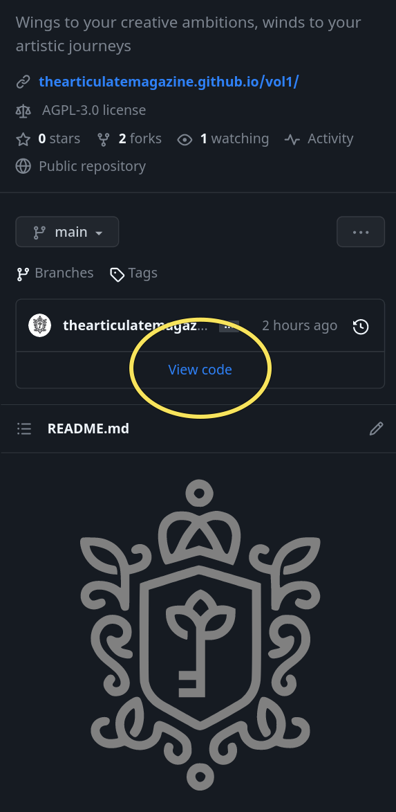
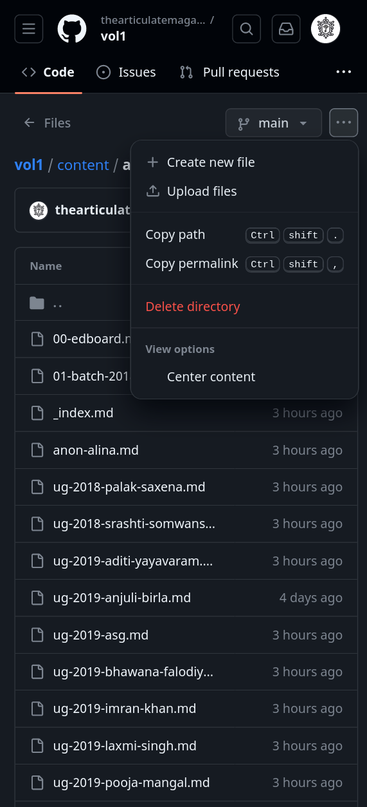

Introduction
We will build this up little by little.
License
Terms
For the purpose of this License, the following terms should be considered as defined below.
- Codebase: ALL files committed into git repo outside the
contentfolder, including, but not limited to files involved in templating, styling, configurations, shell scripts, continuous integration, static files etc.- By definition this excludes the node_folder and other ignored folders, which is covered by licenses set by its respective authors.
- Magazine: "The Articulate" e-magazine.
- Edboard: Editorial board entrusted with publishing "The Articulate" at the time of viewing of this document.
- MagEds: Chief Editors of above said edboard.
- AG & ASG: Miss Astha Gawai and Miss Akanksha Singh Gaur of Batch 2019, Government Medical College, Ratlam. In case both of them are unavailable, whoever is the oldest person to hold the position of MagEd alive at the time should be considered.
Clauses of License
- The license to use the codebase in perpetuity is hereby granted to AG & ASG and whoever follows them as the MagEds of "The Articulate" elected in line with clauses in Election of MagEds. This permission can ONLY be withdrawn if ever any of the Conditions considered as violation of licensing terms is met. Upon such a situation, please see Upon Withdrawal of Permission to know how to move forward.
- Usage of whole or part of the codebase to any purpose outside the "The Articulate" is forbidden.
- Any matter not covered by the above clauses is left to discretion of AG & ASG.
Conditions considered as violation of licensing terms
- Publication of any item in the magazine that is intended to hurt a community, will act as a dog-whistle, or is intended to publicize agendas/propaganda of a political party. The decision authority regarding what constitutes these will be AG & ASG (See Terms).
- Violation of Authors' Rights. See Authors' Rights
- Violation of Collegium System of election of MagEds. See Election of Mage Eds
Election of MagEds
New MagEds are elected by outgoing MagEds in consultation with outgoing Edboard. This collegium system should prevail even when the rest of Students Union posts are open to general election. This is to ensure that magazine remains free of politics and the post is occupied by the most deserving. Overriding this and open the post of MagEds to general election will be considered as violation of licensing terms and permission to use codebase should be considered withdrawn. See Upon Withdrawal of Permission
The two chief editors of magazine will be part of Students' Union Executive Council but will collectively hold only one vote in matters of Students' Union Executive Council.
Upon Withdrawal of Permission to Use Codebase
- Usage of whole or part of codebase must be suspended with immediate effect.
- Any continued usage should be done ONLY after written communication with any or both of AG & ASG (See Terms) and will depend upon their permission via email or other means of reproducible communication available at the time.
- Violation of EITHER of the above clauses will constitute an act of copyright infringement and open the MagEds at the time to measures deemed fit by copyright owner of codebase.
Chief Editors' Rights
A voluntary submission of content to the magazine entitles the MagEds to the following rights:
- To publish the said content in the magazine.
- To reject the said content for the sake of publication in the magazine.
- To republish the said content at a later time if they deem it necessary.
- To reject any demand for removal of an already published material from its original author.
- While not bound by license for removal, MagEds are advised to be considerate if they receive any such demands and deal with it in a case-by-case manner.
- The original author retains ALL the remaining rights to his/her work, including the right to forbid usage of his/her work for the promotion of the magazine.
Authors' Rights
- See Chief Editors' Rights: Point 4.2
- Without the explicit permission of the original author, any material sent for publication in the magazine to CANNOT be published anywhere else.
Terms you need to know
#todo
- Hugo: Hugo is a static site generator. In simple terms, it is a software that can take a text file and convert it into a website you can serve to your users over internet.
- Git: Git is a version control system(VCS), and is currently the most popular VCS in the world. In simple terms, it allows you to save the current state of files in a folder. If you modify multiple files in that folder, and later decide to restore the state of that folder before any modification, git will allow you to do that. Git will allow you to create near infinite number of such restore points.
Despite being integral part of the process of building and pushing the magazine website online, the editors of magazine is not expected to have any knowledge of git or hugo.
- Github: Github is a website which allows users to upload their projects version controlled by git and collaborate with other users. Github also allows hosting of static websites with upto 1GB free space per repo. This facility is used by the magazine.
- Markdown: Markdown is a markup language, which allows bare essentials. It is necessary for editors to be familiar with rules of markdown in order to function.
Creating and managing markdown files
There are several softwares available for markdown file management across platforms. At the time of writing, the following ones are worthy of mention
- markor: Android
- NOTE: The author of markor, who is an open source activist, has removed markor from google play store and made it available only in Fdroid(essentially a playstore for open source android apps) and Markor's Github Repo. You may download latest apk file from either of these and install markor.
- obsidian: Android, Linux, Mac, Windows
- Visual Studio Code/Vscodium: Linux, Mac, Windows
Markdown files in hugo is divided to 2 parts. The first part lies on top between 2 --- and is called "frontmatter". The remaining part forms the content.
The frontmatter follows rules of YAML markup language. While it is not necessary to learn the details of YAML, a few points should be remembered
- YAML is a strict about blank spaces. Adding an extra blank space or forgetting to place a blank space can mess up the file. Hugo will refuse to run if the frontmatter of even a single file is inappropriate.
- Blank lines should be strictly avoided.
The content part follows the Markdown formatting rules. It is necessary for an editor to be familiar with rules of markdown. You may familiarize yourselves with markdown here: Markdown Basic Syntax. These rules are supplemented in a few areas by hugo specific markup. These are explained wherever necessary in this document.
General Structure of markdown file in hugo
Documentation pending
Uploading new file
- Go to github.com and sign in.
- Open the repo
thearticulatemagazine/vol1or whichever volume is the latest at the time. - In desktop, the repo will open to a page with all the relevant files. In mobile view, you may have to click on the
View Codelink to view the files.

- Open the appropriate folder. From the overflow menu in the upper right corner, select
Upload files

- Select the files from your desktop/mobile.
Image Dimensions
- All images should be converted to
webpformat. All popular platforms have software that allow conversion to this format. Below given is a non-comprehensive list of software which permits conversion as well as resizing of images.- Windows: GIMP
- Linux: Imagemagick, Converseen, GIMP
- Mac: GIMP
- Android: #todo
NOTE: In near future, when support for AVIF format is more widespread, it should be preferred over webp format. At this point Edge browser in windows lacks support for it. See AVIF usage data
All the following dimensions are given in pixels. Most cropping/resizing apps in web uses pixels as units, unless otherwise mentioned.
- Profile pic of author: 200x200 Mandatory
- Images for posts: Min width of 400px, Max width of 650px.
- No set limit for height.
- Prefer 650px if possible.
- Image for post that is in focus: Width of 750px.
- No set limit for height.
- Prefer landscape orientation if possible.
- Photo thumbnails: 400x300 Mandatory
- Photos: Max width of 1280.
- No set limit in height.
- Painting thumbnails: 400x300 Mandatory
- Painting: Max width of 1280.
- No set limit in height.
Adding content
Is it from a new contributor? Add a new author file first.
Depending on type of content, refer to appropriate instructions below.
- Interns column
- Poem
- Article
- Event
- Interview
- Book Review
- Movie Review
- Video
- Painting
- Photography
Adding a new author
Checklist
- Name of author
- Bio or Batch
- Avatar image of 200x200 size. (See Image specifications and dimensions)
Steps
- Create a new markdown file (See Create a new markdown file) with the following content, replacing relevant parts as necessary
---
title: "Sachin Tendulkar"
biosmall: "A phenomenon with a willow"
biolarge: "The man who carried the burden of a billion hopes for over 2 decades. His centuries were held a nation together while it was ailing in political turmoils, economic downturns and setbacks in practically every field.
avatar: https://link/to/image
multiple: false
---
- Upload it (See Upload new file) to
content/authors
Points to remember
- The file name should follow the pattern
prefix-hypenated-name-in-small-case.md.- Prefix of UG students will be
ug-batch-year. eg: ug-2018 - Prefix of PG Residents will be
pg-dept-batch-year. eg: pg-psm-2020 - Prefix of anonymous contributors will be
anon - Prefix of any other staff/nursing students should reflect their department, batch year etc. eg:
nursing-2020 - Prefix of contributors from outside campus may be decided by respective chief editors.
- Some prefixes is set aside for special authors. eg: 00-edboard, 01-batch-2018 etc
- Prefix of UG students will be
| Correct | Wrong |
|---|---|
| ug-2020-sachin-tendulkar.md | ug-2020-Sachin Tendulkar.md |
| ug-2020-Sachin-Tendulkar | |
| UG-2020 Sachin Tendulkar.md |
-
The file names you set becomes part of URL. In the above example, the URL for the author page of Sachin Tendulkar will be
https://thearticulatemagazine.github.io/authors/ug-2020-sachin-tendulkar/ -
If there are more than one contributions from the same person, the
multiplefield should be set totrue. This is the switch that decides whether theSee more works from xxxxappears below their works.

biolargefield is not mandatory. If there is content in it, it will appear in the author page, instead onbiosmall.
Adding a new interns column
- Create a new markdown file with the following content, replacing relevant parts as necessary
---
title: "Ricky Ponting"
authid: 01-batch-2018
img: https://link/to/image
tags: []
date: 2023-07-20T05:45:38+05:30
aka: "Punter"
---
Rest of the content..
Points to remember
- The date will decide the order of appearance of any work in the Home page and other listing pages of the magazine. Manipulate it as necessary, without deviating from the format.
- The
akafield will correspond to nickname shown under their name in the index page of Intern's column. It is not mandatory.
Adding a new painting
Checklist
- Author's name, avatar, bio
- Appropriately resized image, thumnail
- Title for the post
- Accompanying quote.
- If it is a new author, create an author file for her/him. See Adding a new author
- If it is an existing author, ensure that her/his author file has
multiplefield set totrue - All paintings should follow size specifications mentioned in Image specifications and dimensions
- Duplicate each painting to create a thumbnail. Thumbnails should also follow size specifications mentioned in Image specifications and dimensions.
- Upload photos and thumbnails to image host (See Uploading images) and collect their direct links.
- Create a new markdown file (See Create a new markdown file) with the following content, replacing relevant parts as necessary
---
title: "Appropriate title"
authid: ug-2023-sachin-tendulkar
img:
tags: []
date: 2023-03-25T06:00:00
---
{{< art "https://link-to-painting-here" >}}
{{< quote >}}
Appropriate quote here
{{< /quote >}}
- Upload it (See Upload new file) to
content/painting
Adding a new photography post
- If it is a new author, create an author file for her/him. See Adding a new author
- If it is an existing author, ensure that her/his author file has
multiplefield set totrue - All photos should follow size specifications mentioned in Image specifications and dimensions
- Duplicate each photo to create a thumbnail. Thumbnails should also follow size specifications mentioned in Image specifications and dimensions.
- Upload photos and thumbnails to image host (See Uploading images) and collect their direct links.
- Create a new markdown file (See Create a new markdown file) with the following content, replacing relevant parts as necessary
---
title: "Appropriate title"
authid: ug-2023-sachin-tendulkar
img: https:link/to/thumbnail/image
tags: []
date: 2023-07-20T07:30:08+05:30
photos:
- img: "https:link/to/img/one"
thumb: "https:link/to/thumb/one"
- img: "https:link/to/img/two"
thumb: "https:link/to/thumb/two"
---
{{< quote >}}
Appropriate quote here
{{< /quote >}}
- Upload it (See Upload new file) to
content/photography
Checklist
- Author's name, avatar, bio
- Appropriately resized images, thumnails
- Title for the post
- Accompanying quote.